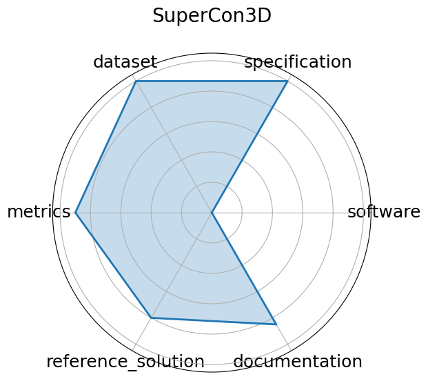

Edit: edit this entry
Date: 2024-12-13
Name: SuperCon3D
Domain: Materials Science; Superconductivity
Focus: Dataset and models for predicting and generating high-Tc superconductors using 3D crystal structures
Keywords: superconductivity, crystal structures, equivariant GNN, generative models
Task Types: Regression Tc prediction , Generative modeling
Metrics: MAE Tc , Validity of generated structures
Models: SODNet, DiffCSP-SC
Citation:
Pin Chen, Luoxuan Peng, Rui Jiao, Qing Mo, Zhen Wang, Wenbing Huang, Yang Liu, and Yutong Lu. Learning superconductivity from ordered and disordered material structures. In A. Globerson, L. Mackey, D. Belgrave, A. Fan, U. Paquet, J. Tomczak, and C. Zhang, editors, Advances in Neural Information Processing Systems, volume 37, 108902–108928. Curran Associates, Inc., 2024. URL: https://proceedings.neurips.cc/paper_files/paper/2024/file/c4e3b55ed4ac9ba52d7df11f8bddbbf4-Paper-Datasets_and_Benchmarks_Track.pdf.
bibtex: ``` @inproceedings{neurips2024_c4e3b55e,
author = {Chen, Pin and Peng, Luoxuan and Jiao, Rui and Mo, Qing and Wang, Zhen and Huang, Wenbing and Liu, Yang and Lu, Yutong},
booktitle = {Advances in Neural Information Processing Systems},
editor = {A. Globerson and L. Mackey and D. Belgrave and A. Fan and U. Paquet and J. Tomczak and C. Zhang},
pages = {108902--108928},
publisher = {Curran Associates, Inc.},
title = {Learning Superconductivity from Ordered and Disordered Material Structures},
url = {https://proceedings.neurips.cc/paper_files/paper/2024/file/c4e3b55ed4ac9ba52d7df11f8bddbbf4-Paper-Datasets_and_Benchmarks_Track.pdf},
volume = {37},
year = {2024}}
```
Ratings:
Software:
Rating: 3
Reason: Baseline models SODNet, DiffCSP-SC are described in the paper; however, fully reproducible code and pretrained models are not publicly available yet.
Specification:
Rating: 5
Reason: Tasks for regression Tc prediction and generative modeling with clear input/output structures and domain constraints are well defined.
Dataset:
Rating: 5
Reason: Dataset contains 3D crystal structures and associated properties; well-curated but not fully released publicly at this time.
Metrics:
Rating: 4
Reason: Metrics such as MAE for Tc prediction and validity checks for generated structures are appropriate and clearly described.
Reference Solution:
Rating: 4
Reason: Paper provides model architecture details and some training insights, but no complete open-source reference implementations yet.
Documentation:
Rating: 4
Reason: Paper and GitHub provide good metadata and data processing descriptions; tutorials and user guides could be expanded.
Average Rating: 4.167
Radar Plot: 